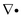
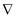
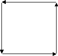
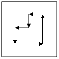
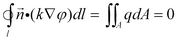
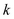
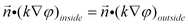
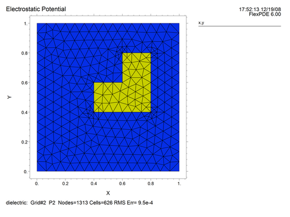
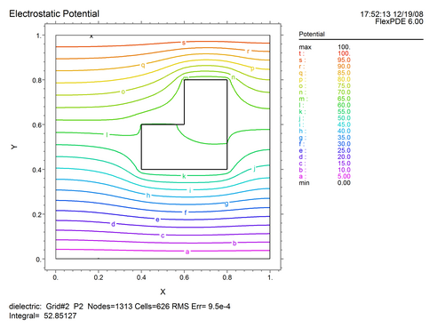

|
Electrostatic Fields in 2D |

  
|
|
Electrostatic Fields in 2D |
|
Let us as a first example construct the electrostatic field equation for an irregularly shaped block of high-dielectric material suspended in a low-dielectric material between two charged plates.
First we must present a title:
title
'Electrostatic Potential'
Next, we must name the variables in our problem:
variables
V
We will need the value of the permittivity:
definitions
eps = 1
The equation is as presented above, using the div and grad operators in place of  and :
equations
div(eps*grad(V)) = 0
The domain will consist of two regions; the bounding box containing the entire space of the problem, with charged plates top and bottom:
boundaries region 1 start (0,0) value(V) = 0 line to (1,0) natural(V) = 0 line to (1,1) value(V) = 100 line to (0,1) natural(V) = 0 line to close |
 |
and the imbedded dielectric:
region 2 eps = 50 start (0.4,0.4) line to (0.8,0.4) to (0.8,0.8) to (0.6,0.8) to (0.6,0.6) to (0.4,0.6) to close |
 |
Notice that we have used the insulating form of the natural boundary condition on the sides of the bounding box, with specified potentials top (100) and bottom (0).
We have specified a permittivity of 50 in the imbedded region. (Since we are free to multiply through the equation by the free-space permittivity  , we can interpret the value as relative permittivity or dielectric constant.)
, we can interpret the value as relative permittivity or dielectric constant.)
What will happen at the boundary between the dielectric and the air? If we apply equation (1.2) and integrate around the dielectric body, we get

If we perform this integration just inside the boundary of the dielectric, we must use = 50, whereas just outside the boundary, we must use = 1. Yet both integrals must yield the same result. It therefore follows that the interface condition at the boundary of the dielectric is
.
Since the electric field vector is  and the electric displacement is
and the electric displacement is  , we have the condition that the normal component of the electric displacement is continuous across the interface, as required by Maxwell’s equations.
, we have the condition that the normal component of the electric displacement is continuous across the interface, as required by Maxwell’s equations.
We want to see what is happening while the problem is being solved, so we add a monitor of the potential:
monitors
contour(V) as 'Potential'
At the end of the problem we would like to save as graphical output the computation mesh, a contour plot of the potential, and a vector plot of the electric field:
plots
grid(x,y)
contour(V) as 'Potential'
vector(-dx(V),-dy(V)) as 'Electric Field'
The problem specification is complete, so we end the script:
end
Putting all these sections together, we have the complete script for the dielectric problem:
See also "Samples | Applications | Electricity | Dielectric.pde"
See also "Samples | Applications | Electricity | Fieldmap.pde"
Descriptor 1.1: Dielectric.pde
title
'Electrostatic Potential'
variables
V
definitions
eps = 1
equations
div(eps*grad(V)) = 0
boundaries
region 1
start (0,0)
value(V) = 0 line to (1,0)
natural(V) = 0 line to (1,1)
value(V) = 100 line to (0,1)
natural(V) = 0 line to close
region 2
eps = 50
start (0.4,0.4)
line to (0.8,0.4) to (0.8,0.8)
to (0.6,0.8) to (0.6,0.6)
to (0.4,0.6) to close
monitors
contour(V) as 'Potential'
plots
grid(x,y)
contour(V) as 'Potential'
vector(-dx(V),-dy(V)) as 'Electric Field'
end
The output plots from running this script are as follows:

